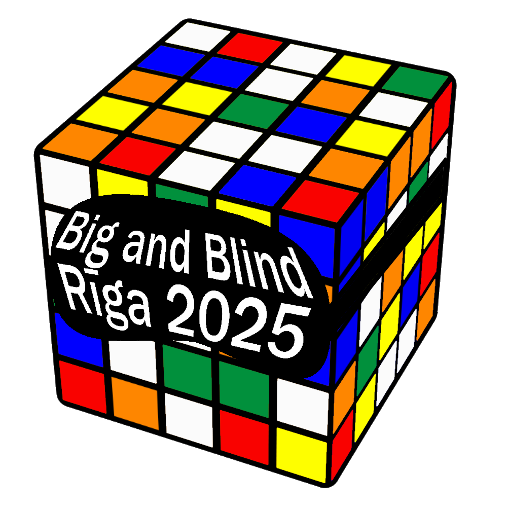
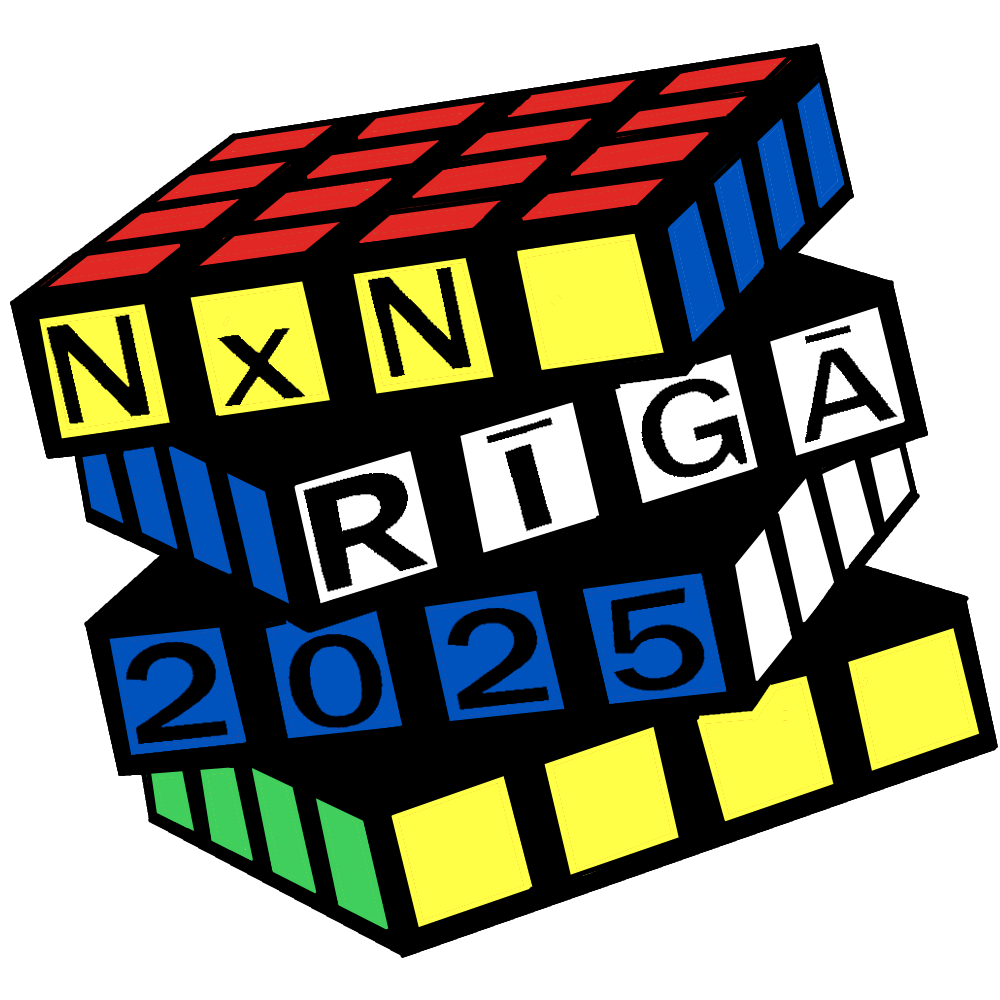

Latvijas Kubu Asociācija
Papildus Disciplīnas Rīgā 2025
4/16/2025 | Autors: Toms Edvards Vucens
Laipni lūgti nestandarta Rubika kuba ātrlikšanas sacensībās! Šajās sacensībās būs papildus (jeb "Side") disciplīnas - 5x5, 6x6 un 7x7, 3x3 Blindfoldded, Pulkstens, Megaminx, Square-1 un 4x4 Blindfoldded. Aicināti piedalīties, kam ir nepieciešamās prasmes.
Vairāk informācijas spiežot šeit.
Big and Blind Rīga 2025
1/10/2025 | Autors: Toms Edvards Vucens
Laipni lūgti nestandarta Rubika kuba ātrlikšanas sacensībās! Šajās sacensībās būs visas Blind disciplīnas, kā arī FMC, 6x6 un 7x7. Aicināti piedalīties, kam ir nepieciešamās prasmes.
Vairāk informācijas spiežot šeit.
NxN Rīgā 2025
1/5/2025 | Autors: Toms Edvards Vucens
Laipni lūgti klasiskās Rubika kuba ātrlikšanas sacensībās! Šajās sacensībās būs visas regulāro NxN kubu disciplīnas. Aicināti piedalīties visi neatkarīgi no vecuma vai dzimuma.
Vairāk informācijas spiežot šeit.
Latvijas Kubu Ascoiācijas mājaslapa izsludināta!
18/12/2024 | Autors: Toms Edvards Vucens
Ar prieku paziņojam, ka Latvijas Kubu Asociācija ir izveidojusi jaunu mājaslapu! Tā ir vieta, kur vienuviet atradīsiet visu informāciju par Rubika kuba ātrumlikšanu Latvijā.
Ko var atrast jaunajā mājaslapā?
- Informāciju par gaidāmajām sacensībām.
- Jaunumus un aktualitātes par speedcubing Latvijā.
- Iepriekšējo sacensību rezultātus un rekordus.
Aicinām visus apskatīt mājaslapu, sekot līdzi aktualitātēm un pievienoties mūsu aktivitātēm!